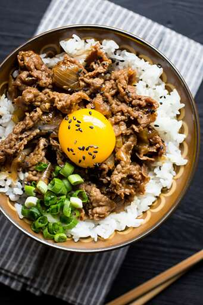

Gyudon (Beef Bowl)

Description
Gyudon is one of the most popular rice bowl dishes in Japan. Shall we cook Gyudon tonight?
Ingredients
- 4 cups cooked rice
- 6 tablespoons mirin
- 3 tablespoons soy sauce
- 2 tablespoons sake
- 1 onion, cut into wedges
- 10 ounces beef, thinly sliced
- 4 eggs
- 1 teaspoon picled ginger, or to taste (optional)
Steps
- Divide rice evenly between 4 donburi bowls
- Bring mirin, soy sauce, and sake to a boil in a pot over medium heat. Add onion; cook and stir until onion is translucent, about 5 minutes. Stir in beef; simmer until no longer pink and cooked through, about 5 minutes. Spoon beef and onion over rice using a slotted spoon.
- Place eggs in the pot; bring to a boil. Cook until soft boiled, 5 to 7 minutes. Peel; add to bowls. Garnish with pickled ginger.
Home